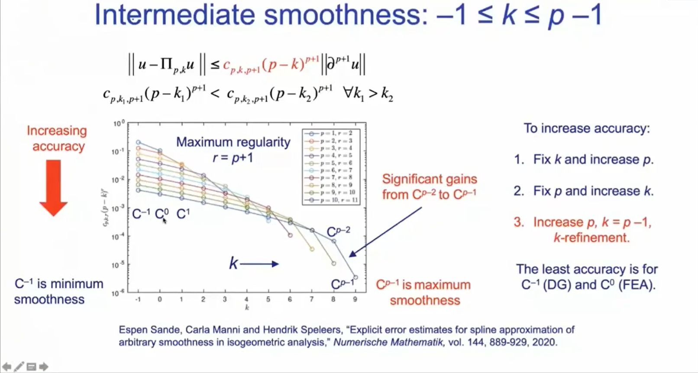
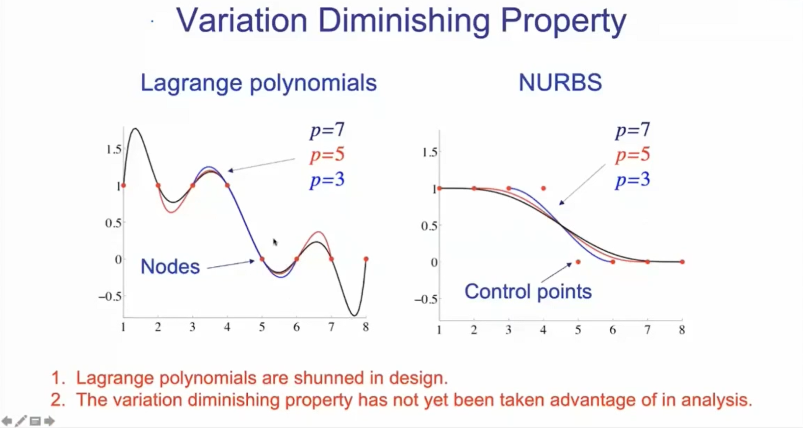

有限元方法和计算力学：过去、现在和未来展望
0. Introduction: 3 parts:(1) the origin and success of Finite Element Method (2) the progress of Isogeometric Analysis (3) future technologies, computer developments, machine learning
1. Past: When did FEM begin? A1: In 1940 by Alexander Hrennikoff, beam. A2: In 1956 by John Argyris and Ray Clough. A3: In 1967 by O.C. Zienkiewicz. A4: Bruce Irons, developed many ideas; Number of FEM papers and citations: 1956-1963 zero. 1963-1985: grow. After 1985: level off; FEM fields: 1960s, from Aerospace Engineering to Civil Engineering, mathematical theory of FEM began. 1970s, Mechanical Engineering, Computational Mechanics, commercial code development. 1980s, fluid dynamics. 1990s, medical imaging modalities.
2. Present: Cars and airplanes designed on computers. Full-body Fluid-Structure Interaction; Why FEM is successful? Simplicity and generality(general purpose computer programs), a firm mathematical thesis; FEM's problems: model creation bottleneck, geometry errors, feature removal, geometry clean-up, no higher-order finite elements, closing the loop with design optimization; Objectives: reconstitute FEA within precise CAD geometry, simplify FEA model development, integrate design and analysis; IGA: based on computational geometry, FEM is a special case; Mathematical properties of splines: functional analysis, spectral analysis, variation diminishing and convex hull properties, Kolmogorov n-widths; Intermediate smoothness(Fig. 1); B-splines eigenfunction error doesn't diverge like FEA in high order elements; variation diminishing property, avoid Lagrange polynomial's over-fitting(Fig. 2).
 3. Future: Computational medicine, phase fields(topology optimization, NSK equations), integration of design, machine learning